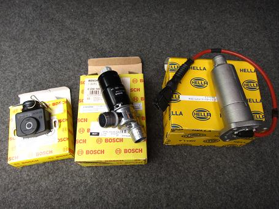
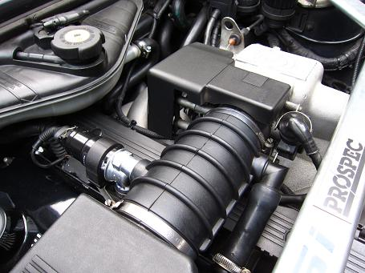
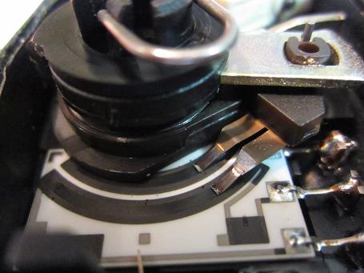
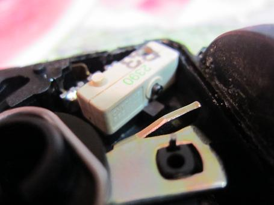
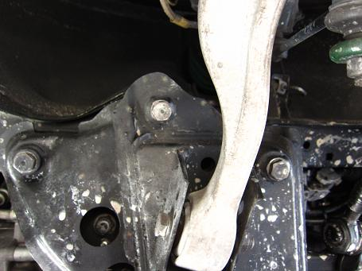
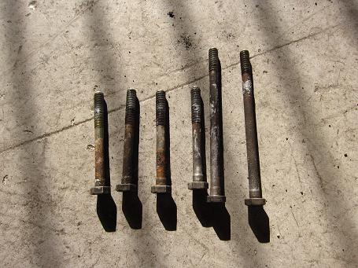
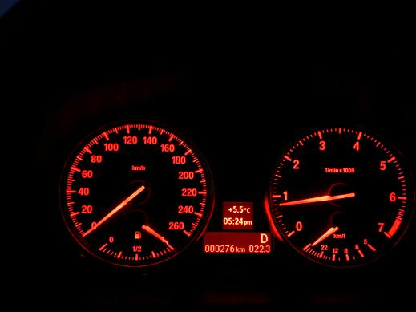

 これまで交換をためらっていた部品だ。 アイドルバルブとスロットルポジションセンサーは中古を入手して使っていたが、ついにスロットルポジションセンサーは寿命が来たようだ。 アイドルバルブは機能しているようだが、カタカタ動く内部のコマにガタが出ていた。 オイルレベルセンサーはエンジンの熱で配線がボロボロに・・・ これらの部品は純正だと高価すぎて買えない（笑 今回の部品は社外は出ておらず、ＯＥＭで揃えることにした。 |
 交換終了の図！ 今回最大の不具合は、エンジンにしっかり熱が入った時におこるハンチングだった。 高速道路を長時間走り、渋滞や料金所でクラッチを切るとアイドルが500rpm~2000rpmで大きく振れる。 2000rpmで固定になったこともあった。 これが渋滞の時に起こると最悪で・・・ 2000rpmで半クラでの発進になり、とても神経を使った（汗 症状からスロットルポジションセンサーを疑い交換したが、頻度は減ったもののまだ症状が見られた。 ハンチングが出ない時はピタッと安定しているんだけどなぁ・・・ 主治医と相談のもと「原因はエアフロではないか？」との見解に。 ＯＨしてもらった時にエアフロの加工を見抜いていたそうだ。 この時に、エアフロのダイヤルをリッチ方向（フラップが開きやすくなる）に調整していたのだが・・・ オーバーラップが広くなり、吹き戻しでエアフロのフラップが振れていたようだ。 エアフロのダイヤルを元に戻してからはハンチングは出ていない。 フラップ式のエアフロ車にハイカムを入れる場合は注意が必要だ。 |
  200000kmは使っただろうか。 取り外したスロポジセンサーは電極が消耗し、リミットスイッチが戻りにくくなっていた。 単純な機構ながらOEMでも値が張る部品だ。 |
  これもＯＨ時に指摘された部分、フロントメンバーの固定ボルトだ。 構造上メンバー内部に水が入ると抜けにくくなっている。 かなり太いボルトかつ６本で止まっているので折れることはないだろうが、錆びているまま放っておくのも良くない。 もし折れるとメンバーを外さないといけない。摘出は大変そうだ。 １本数百円だし、予防整備がてら交換してた。１本づつ交換すれば位置がずれることもない。 これでまだ１０年は乗れるだろう（笑 |
 余談だが、少し前に新車に乗る機会があった。 メーカーはメーターを見れば分かるだろう。あえてメーカー/グレードは伏せておく。 最近のは水温計が無い。製造から５～６年も経てば怖くて乗っていられないだろう（汗 リースで３年ごとに乗り換える人には良いかもね！ ちょうど去年の今頃だ。 故障続きでＥ３４を一旦降りようかとも思ったが、最新の物に触れてみて「早まらなくて良かった！」と心から思った。 こんなドライブフィールなら、わざわざ壊れやすいメーカーを選ぶメリットは何も無い。 ドライブフィールが良いけど壊れる or ドライブフィールがイマイチで壊れる あなたはどちらを取る？！（笑 Ｅ３４は整備をすれば最新の物よりも優れたドライブフィールを味わえる。 これがいつまで経っても降りれない最大の原因だ。 駆動系が落ち着いたので、次は外装のリフレッシュに入っていこうと計画している。
|